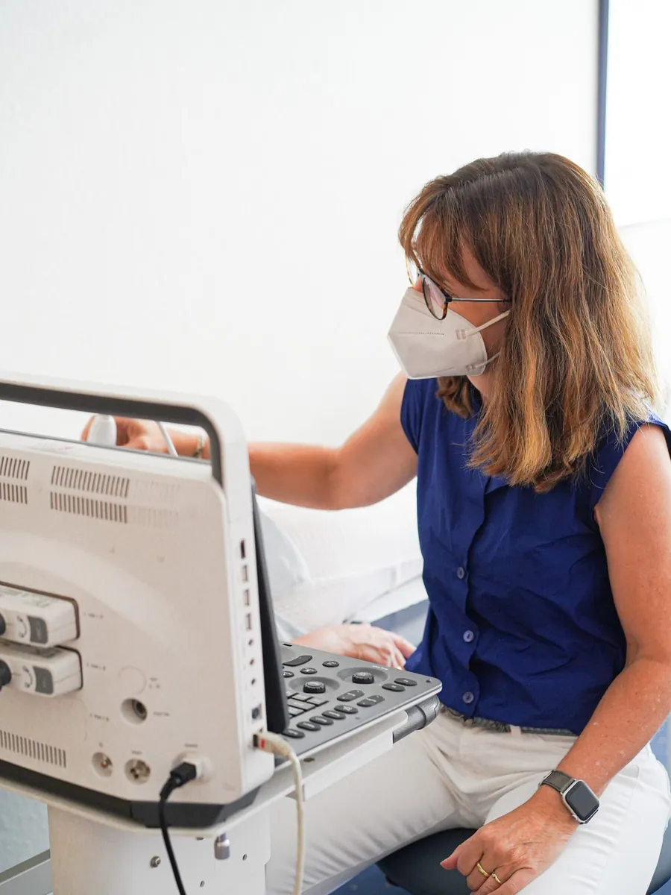
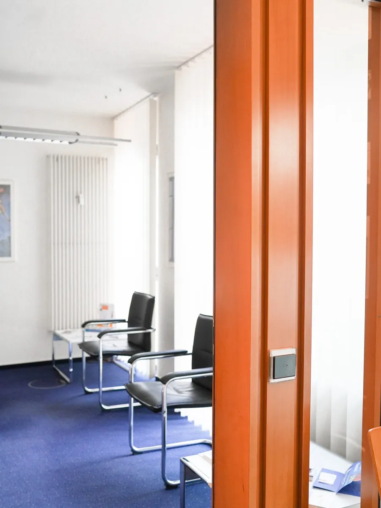

Ihre Ärztinnen und Ärzte
Sechs Hausärztinnen und Hausärzte, zwei Standorte in Metelen, ab 2027 ein Haus. Fotos von Frau Weritz, Frau Schön und Dr. Grützner folgen.
- Louise WeritzFachärztin für AllgemeinmedizinWettringener Straße 2
- Annette SchönFachärztin für Allgemeinmedizin, KindervorsorgenWettringener Straße 2
- Dr. Ekkehard GrütznerFacharzt für Innere Medizin, seit April 2026 im Team, davor viele Jahre eigene Praxis in WettringenWettringener Straße 2
- Dr. Hedwig NiehoffÄrztin für Allgemeinmedizin und PalliativmedizinSchilden 4
- Dr. Andrea ViermannÄrztin für Allgemeinmedizin und ChirotherapieSchilden 4
- Michael NiesenArzt für Allgemeinmedizin, Chirotherapie und SportmedizinSchilden 4
Praxisteam Schilden 4
- Christiane Laurenz
- Nina Borgert
- Marie-Inès Fleige
- Finja Wiedau
- Cathrin Homölle
- Petra Segeler-Mensing
Praxisteam Wettringener Straße 2
- Maike BergerPraxisorganisation, Personalmanagement, Sprechstundenbedarf
- Franziska MünstermannMFA, VERAH, NäPA, Abrechnung
- Ulrike MühlhausenMFA, Abrechnungscontrolling, Privatabrechnung, Disease-Management-Programme
- Eva BittingPflegefachkraft, Palliative Care
- Kornelia WiechersMFA, VERAH, NäPA
- Ryve HoltheuerMFA, VERAH
- Erestina BekteshiMFA, Tape, Hausarztprogramm
- Nicole PieweckMFA, Tape, Hygienebeauftragte
- Indra KochMFA
- Katrin JanningMFA
- Chajma Et-AliMFA in Ausbildung
VERAH: Versorgungsassistentin in der Hausarztpraxis. NäPA: Nicht-ärztliche Praxisassistentin. Beide dürfen zum Beispiel Hausbesuche übernehmen.
Einblicke


Fotos aus der Praxis am Schilden. Von der Wettringener Straße folgen Fotos.
Werden Sie Teil des Teams
Wir suchen ab sofort eine Hausärztin oder einen Hausarzt. Jetzt bewerben